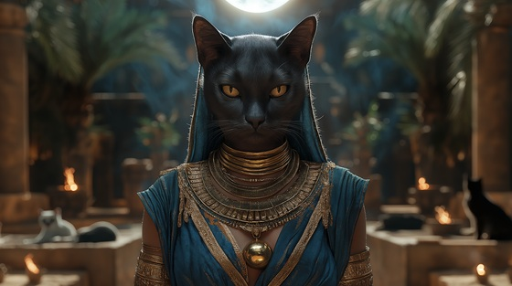

Feel the silent strength of Bastet, the fierce and loving guardian of Egypt, in this groove-driven metal hymn. A goddess of beauty and vengeance, music and blood — Bastet dances between the sacred and the savage, defending what she cherishes with elegance and fury.
Who is Bastet?
Bastet is the feline-headed Egyptian goddess of home, fertility, joy, music, and women, but also of divine retribution and protection. She was worshipped across Egypt — particularly in Bubastis — as both a nurturing protector and a vengeful force when provoked.
Originally depicted as a lioness, Bastet evolved into a domestic cat-headed goddess, representing both comfort and calculated power. Her dual nature made her beloved in homes and feared in battle.
Bastet: Serenade of claws
Velvet shadows on the stone
A purr beneath the sacred throne
I walk in silk, I strike in steel
A guardian cloaked in what you feel
With golden eyes, I see the truth
A mother’s touch, a hunter’s tooth
In temple halls, in hearth and flame
You’ll find my claws, you’ll speak my name
I dance the line of peace and pain
A whispered hymn, a lion’s reign
I am Bastet — blade and balm
The storm in silence, fury calm
With music soft or battle cry
I guard the night, I watch you lie
A serenade in dusk and flame
I bear the claws that speak no shame
The cats that prowl your shadowed gates
Are echoes of my silent grace
The sick are healed beneath my hand
Yet kings will fall at my command
No war I seek, no wrath I boast
But raise your sword, and I am close
My song will soothe, my teeth will tear
For all I love, I will beware
I dance the line of peace and pain
A whispered hymn, a lion’s reign
I am Bastet — blade and balm
The storm in silence, fury calm
With music soft or battle cry
I guard the night, I watch you lie
A serenade in dusk and flame
I bear the claws that speak no shame
In every home, my shadow stays
In candlelight and market days
I walk with queens, I feast with thieves
Yet strike with wrath when none believe
I hold the child, I kill the snake
My temple sings for every fate
So pray in peace, but know me well
My love is warm, my war is hell
I dance the line of peace and pain
A whispered hymn, a lion’s reign
I am Bastet — blade and balm
The storm in silence, fury calm
With music soft or battle cry
I guard the night, I watch you lie
A serenade in dusk and flame
I bear the claws that speak no shame
My purr can heal, my claws can bleed
I serve the throne, I guard the seed
In every home, a song remains
Of feline grace and godlike flame
So let the bells and incense rise
And offer wine where shadow lies
For in your halls and whispered calls
The queen of claws forever prowls